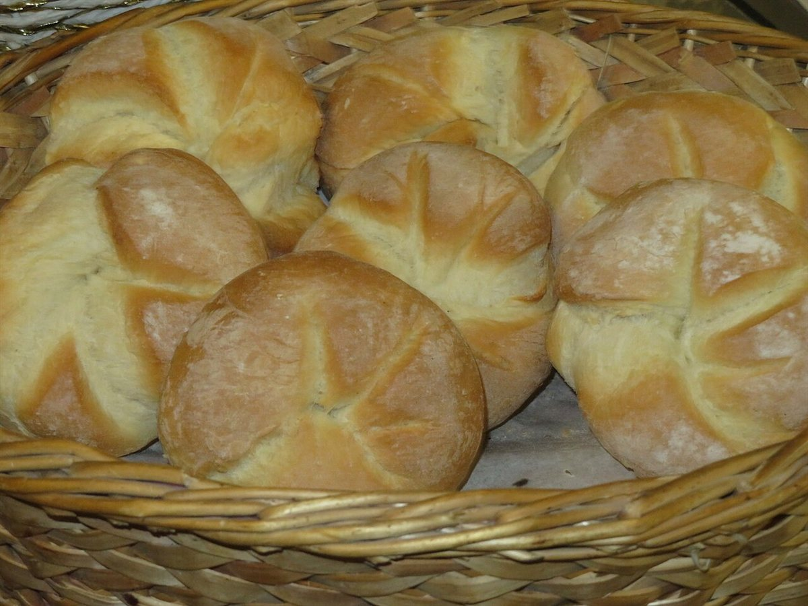
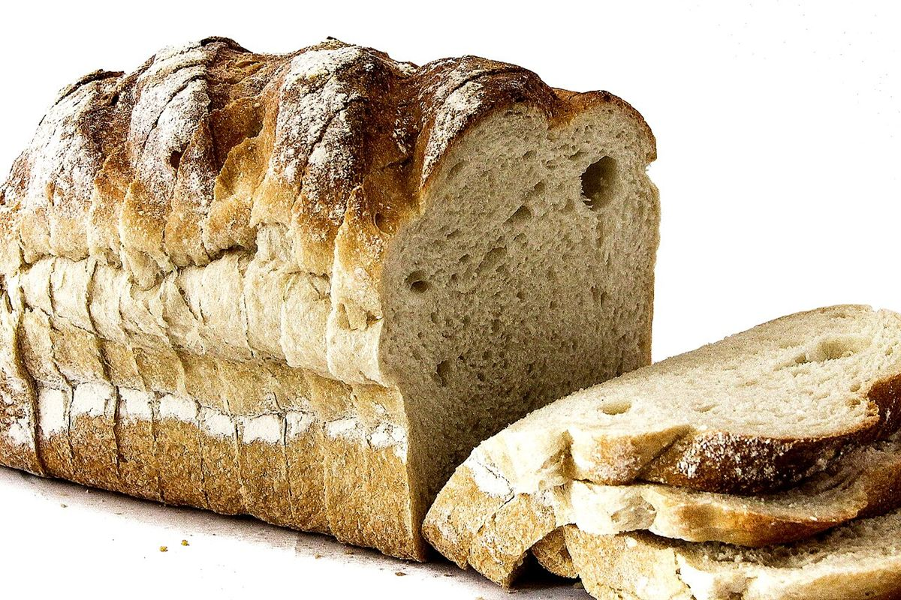

花巻市桜町 / コーヒー&キッシュ
MISSING PIECE
ひと皿に足りなかった一切れを、コーヒーと焼き菓子でそっと満たすカフェ。
ひと皿に足りなかった一切れを、コーヒーと焼き菓子でそっと満たすカフェ。
花巻市桜町にある、個人経営の小さなカフェです。店名には「Coffee&Quiche」が添えられており、コーヒーとキッシュが中心のお店です。
Instagramでは、白砂糖・マーガリン・ショートニングを使わず、余計な材料を控えて作るお菓子が紹介されています。バターと卵を使わないスコーンや自家製パンも並び、予約・お取り置きにも対応しているとのことです。
店名の由来や店主の想いは確認できていないため、ここには載せていません(オーナー様の言葉に差し替えます)。トップの一文は制作側のイメージです。

種類・価格は準備中です。
内容・価格は準備中です。
内容・価格は準備中です。
営業時間・定休日・価格・電話番号: 準備中(Instagramでは日・月曜が基本の定休と案内されています。最新情報は店舗にご確認ください)





コーヒーと一緒にいただくお菓子が、やさしい味でほっとしました。
こぢんまりとしていて、ひとりでも気兼ねなく過ごせそうな雰囲気です。
スコーンやパンを選ぶ時間が楽しく、また立ち寄りたくなります。
※実在のお客様の声ではなく、制作側が作成したイメージ例です。
縮小などの加工をしています。
写真はフリー素材のイメージで、店舗の実際の様子ではありません。実際の店内・商品写真は貴店ご提供のものに差し替えます